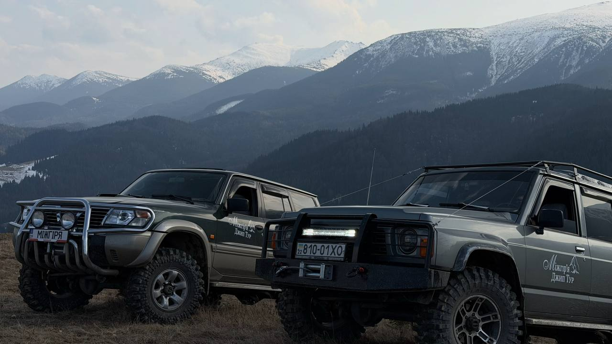
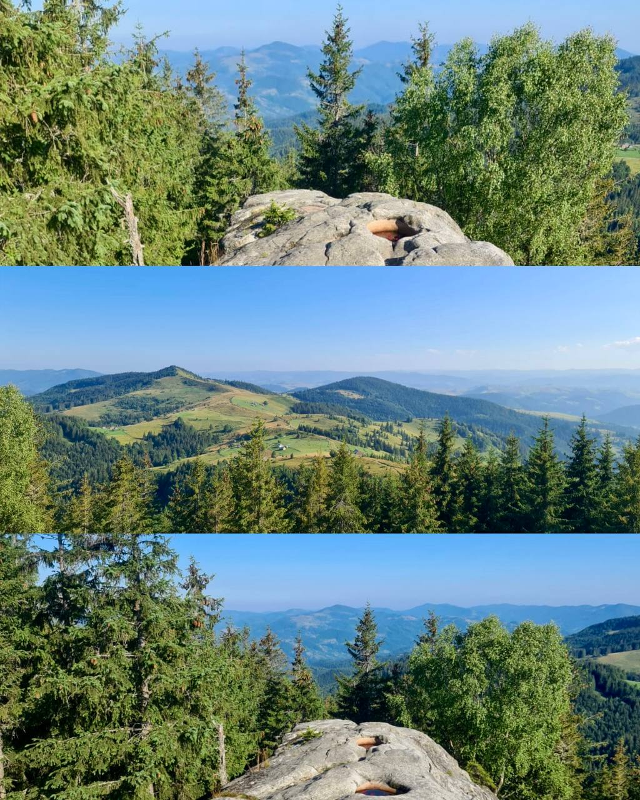
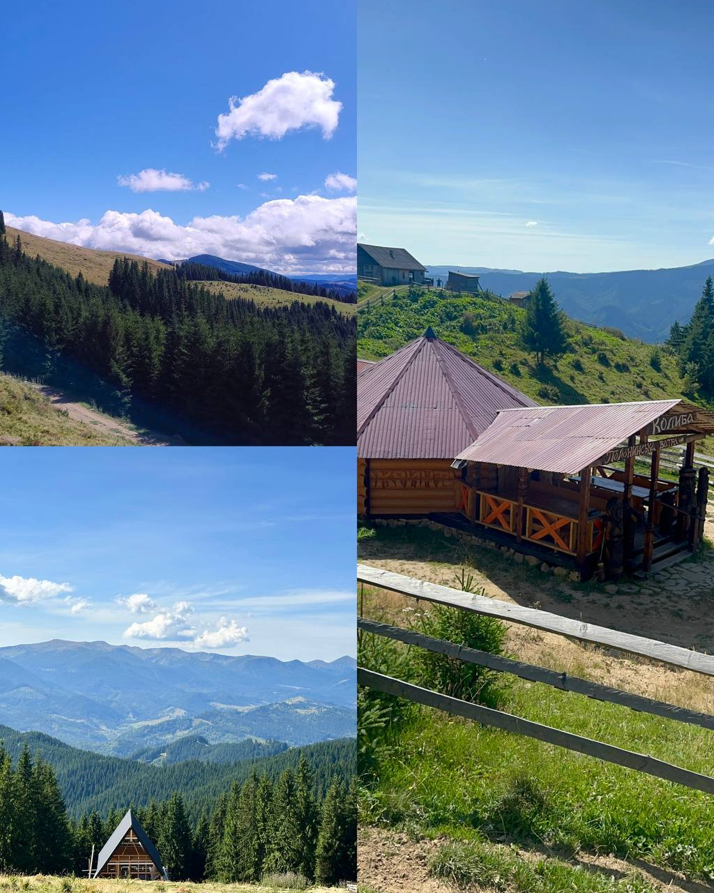
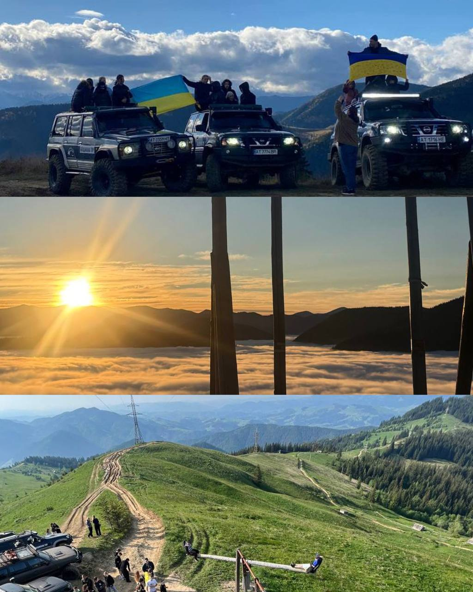
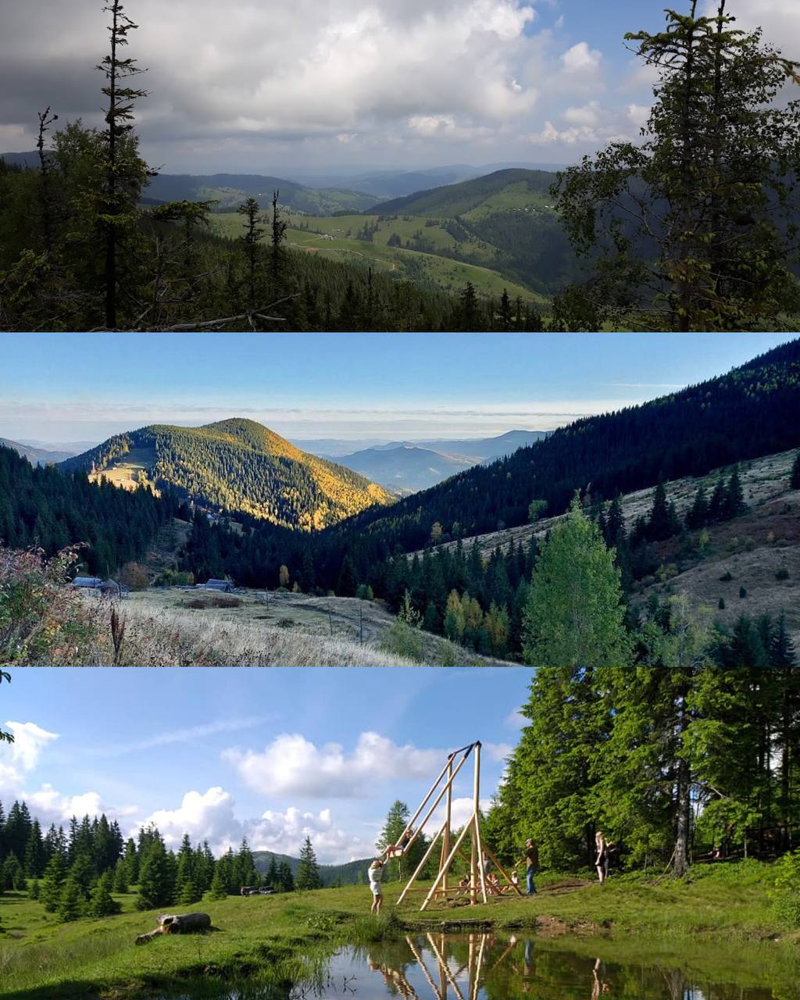
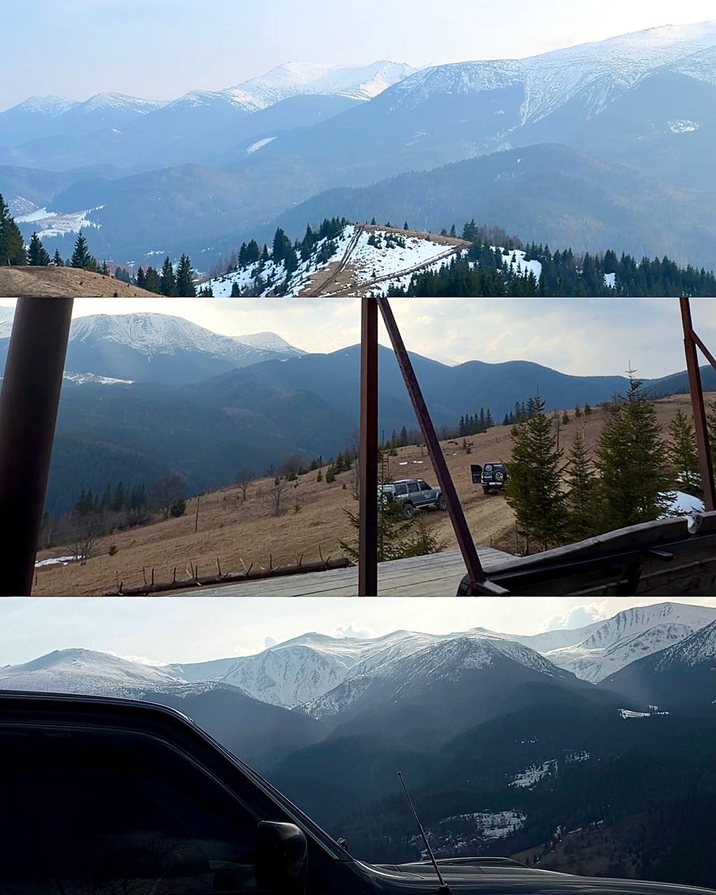
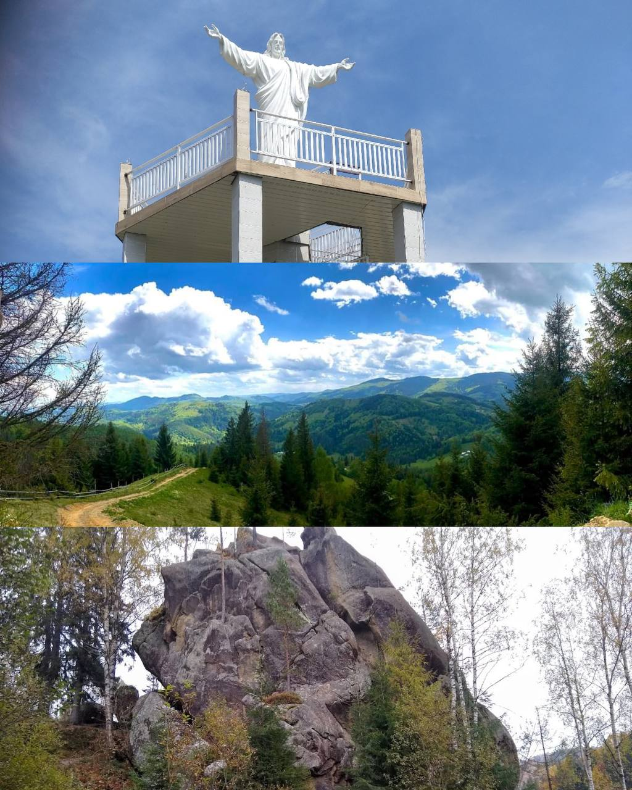

Гуцульські гори на повному приводі.
Полонини, водоспади, дерев'яні церкви та таємні стежки Чорногори. Везуть місцеві — родом з Верховини.
- 6+Маршрутів
- 8 роківУ горах
- 4.9★Відгуків
Карпати — наш дім. Покажемо їх вам.
Ми — гуцульська команда з Верховини. Виросли серед цих гір, знаємо кожну стежку, кожне джерело й кожного ґазду на полонині. Наші джипи перевірені на найскладніших бродах Чорногори, а маршрути зібрані з історій, які передавали діди.
Беремо невеликі групи — щоб ви відчули гори, а не лише сфотографували.
- Місцеві гіди
- Підготовлені 4×4
- Бринза та чай
- Малі групи


Серце Гуцульщини — село Ільці
Серце Гуцульщини — село Ільці Наша база — у самому селі Ільці, на берегах Чорного Черемошу, в Івано-Франківській області. Звідси стартують усі маршрути в бік Чорногори, Гриняви та Мармароських Альп.
- Адреса Село Ільці с. Ільці, 78700
- Час роботи Цілодобово 24/7` с. Ільці, 78700
Як дістатись: Івано-Франківськ — 130 км · Чернівці — 150 км · Львів — 260 км.
Куди поїдемо?
Шість авторських маршрутів — від тихих полонин до високогірних хребтів. Прокладіть пальцем дорогу від однієї пригоди до іншої.
Писаний Камінь
Місце сили та загадок. Скелі з давніми написами, неймовірні панорами та атмосфера, яку важко передати словами це треба відчути.
- ₴ 4500 грн
- Легкий


Полонина Кринта
Один із найкрасивіших маршрутів із захопливими видами на гірські хребти. Ідеально для фото та перезавантаження.
- ₴ 4500 грн
- Легкий
Гора Бенджола
Ідеальна локація для тих, хто хоче побачити Карпати з висоти. Простори, вітер і відчуття повної свободи.
- ₴ 4500 грн
- Середній

Гора Біла Кобила
Відкритий трав'янистий хребет з 360° панорамою Чорногори та Гриняви. Вітер і простір.
- ₴ 3500 грн
- Середній
Полонина Псарівка
Тут починається справжній дух гір тиша, зелені схили та традиційне пастуше життя.
- ₴ 4500 грн
- Легкий


Снідавка
Особливе місце з панорамою на гори та символічною атмосферою спокою і сили.
- ₴ 7000 грн
- Легкий
Що ви побачите й скуштуєте
Кожна локація — це не лише фото, а й історія, смак і запах живих Карпат.
-
Полонини й вівчарі
Високогірні луки з отарами, колиби з живою бринзою та вурдою.
-
Водоспади та скелі
Пробій, Гук, Манявський — місця, де хочеться залишитись на ніч.
-
Гуцульські села
Дерев'яні церкви XVII ст., музеї, майстерні різьбярів і ткаль.
-
Місцева кухня
Бануш на сметані, гриби, форель з гірських потоків, узвар.
Машини, що не підводять
Перевірені позашляховики з повним приводом, лебідками й шноркелями. Кожен виїзд — техогляд.

-
Авторські маршрути
Стежки, яких немає в путівниках. Зібрані за роки життя в горах.
-
Малі групи до 6 осіб
Один джип — одна компанія. Без натовпу та поспіху.
-
Підготовлені позашляховики
Nissan Patrol — кожен джип перевірений механіком.
Карпати на власні очі






Готові у Карпати?
Напишіть або зателефонуйте нам — підкажемо найкращий маршрут під вашу компанію та погоду.
- Телефон +380 98 411 27 87
- Instagram @mizhirya.tour.ua
- TikTok @mizhirya.tour.ua
- Facebook @mizhirya.tour.ua